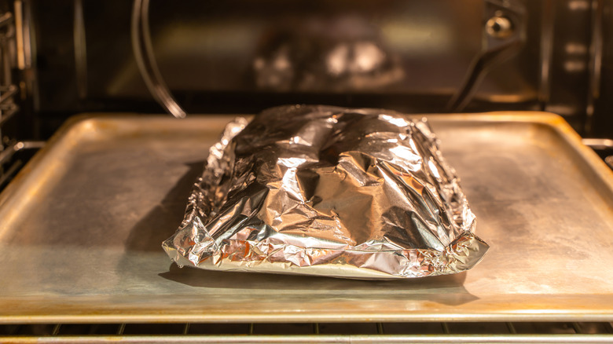

Grandma's (Quick) Pork in the Oven

Home
Description
A quick and simple recipe Grandma passed down during my early college years. It's quick, hands off, and tasty; bringing fond memories and a sense of comfort.
Ingrediants
- Pork of some kind
- Lawry's seasoned salt
- Black pepper
- Garlic powder
- Italian seasoning mix
Steps
- Preheat oven to 350 degrees; 30 minutes bake time
- Season pork on both sides and wrap in tinfoil, with the fat side facing up
- For the final five minutes of baking, quickly take out pork, insert 1/2 Tbsp butter into foil, re-wrap, and return to oven for final ~5 minutes